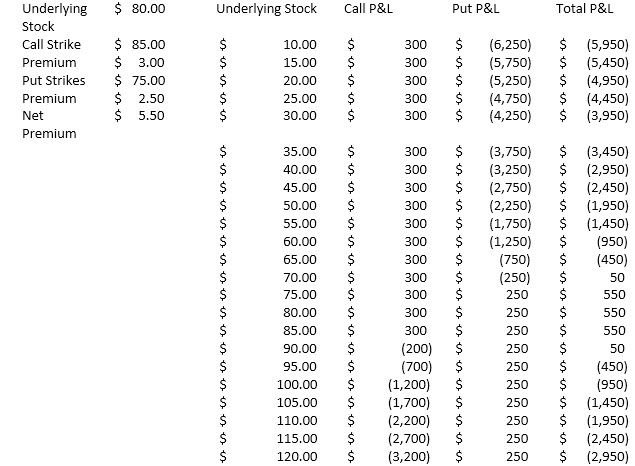

Short Strangle
The short strangle is similar to the short straddle, though the strikes of the options differ. This is also a trade that benefits from decay and decreased volatility regardless of direction. Because the strike prices involved are further apart than a short straddle, there is a lower risk that this trade will cause the investor to face a loss. The lower associated risk means that the investor receives a lower premium at the outset for making the trade. As with a short straddle, profit is capped to the initial premium while loss is potentially unlimited. The short strangle makes maximum profits between the two strike prices and has two breakeven points. To the downside, the trade makes money if the stock stays above the lower strike price of the put minus the sum of the two premiums paid. To the upside the trade makes money if the stock stays below the upper strike price for the call plus the sum of the two premiums paid. Outside of these breakeven points the trade has unlimited loss potential in the event that the share price continues to increase or decrease, though the downside potential loss is limited by the fact that the share price could only fall to a minimum of zero.
Short Strangle example –
• Underlying XYZ stock price: $80.00 • Call strike price: 85.00 • Call option premium: $3.00 • Put strike price: 75.00 • Put option premium: $2.50 • Days to expiration: 90
• Upside Breakeven: $85.00+$3.00+$2.50 = $92.50 (Call strike price plus premium received for call plus premium received for put option) • Downside Breakeven: $75.00-$3.00-$2.50 = $69.50 (Put strike price minus premium received for call minus premium received for put option) • Profit potential: Limited to the combined premiums from both call and put or $5.50 and occurs at all points between the $75.00 and $85.00 strike prices. Until the upper strike price neither the call nor put has zero intrinsic value. And so, between the strikes, the investor retains both premiums. Below the strike price of the put the value of the combined premium is eaten away, as the intrinsic value of the put option increases. Conversely, above the strike price of the call, that combined premium begins to diminish as the intrinsic value of the call increases. • Potential profit: @$80.00 – Both put and call options are out-the-money and each has zero value. The investor gets to keep the entire $5.50 premium collected from the sale of each option. • @$60.00 – The out-the-money call option now has zero intrinsic value. However, the put option is now in-the-money by $15.00 ($75.00 minus $60.00) and this must be subtracted from the combined $5.50 premium, which leaves the investor at a total loss of $9.50 ($15.00 - $5.50 = $9.50). • Maximum loss: Just like with a short straddle strategy, the short strangle seller faces potentially unlimited losses to the upside, since the intrinsic call value keeps up with the rising share price penny-for-penny. Losses to the downside can be significant as the intrinsic nature of the put option matches the downside performance of the stock penny-for-penny, limited only by a zero value for the underlying share price. Market Outlook - Neutral Volatility View - Decreases premium Time Erosion - Reduces premium Dividends - Neutral Interest Rate - Neutral Profit Potential - Limited Loss Potential - Substantial from short put/ unlimited from short call Components - Sell lower strike put and higher strike call option with same expiration

Disclosures Options involve risk and are not suitable for all investors. For more information, read the “Characteristics and Risks of Standardized Options”. For a copy, call 312-542-6901. Trading on margin is only for sophisticated investors with a high risk tolerance. You may lose more than your initial investment. For additional information regarding margin loan rates, see ibkr.com/interest.
Multiple leg strategies, including spreads, will incur multiple commission charges.